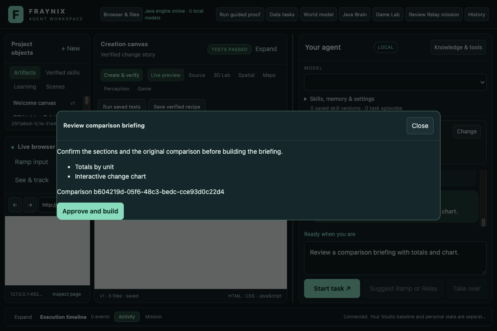
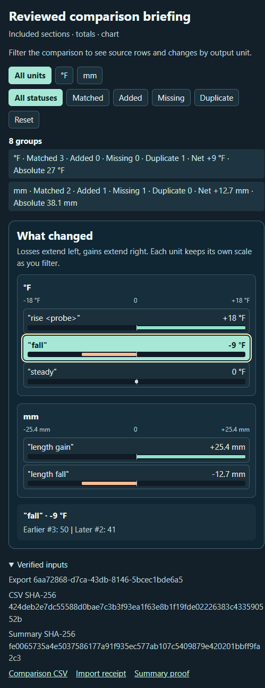

Approve and share a verified comparison briefing
Choose the totals, chart or source rows for an offline briefing in Chat. Approve the source and the selected sections before Fraynix builds it.

Review the proposed sections and comparison on Apple silicon macOS

The stand-alone file on Windows shows the reviewed totals and chart
System files
Open source